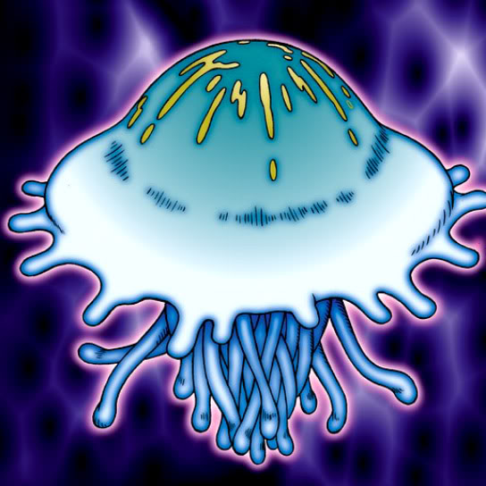

Jellyfish

Description: "While this card is face-up in the defense position, all THUNDER monsters are reduced 500 points."
STATS
ATK: 1200
DEF: 1500DECK COST
Deck Cost per Card: 32EFFECT NOT IMPLEMENTED
Fusion List (14 Possible Fusions)
- Jellyfish + Baby Dragon = Spike Seadra
- Jellyfish + Blackland Fire Dragon = Spike Seadra
- Jellyfish + Crawling Dragon #2 = Kairyu-Shin
- Jellyfish + Crawling Dragon = Kairyu-Shin
- Jellyfish + Darkfire Dragon = Spike Seadra
- Jellyfish + Dragon Zombie = Kairyu-Shin
- Jellyfish + Koumori Dragon = Spike Seadra
- Jellyfish + LaLa Li-oon = Bolt Escargot
- Jellyfish + Oscillo Hero #2 = Bolt Escargot
- Jellyfish + Petit Dragon = Spike Seadra
- Jellyfish + Spike Seadra = Kaminari Attack
- Jellyfish + Sword Arm of Dragon = Kairyu-Shin
- Jellyfish + Wicked Dragon with the Ersatz Head = Spike Seadra
- Jellyfish + Yamatano Dragon Scroll = Spike Seadra